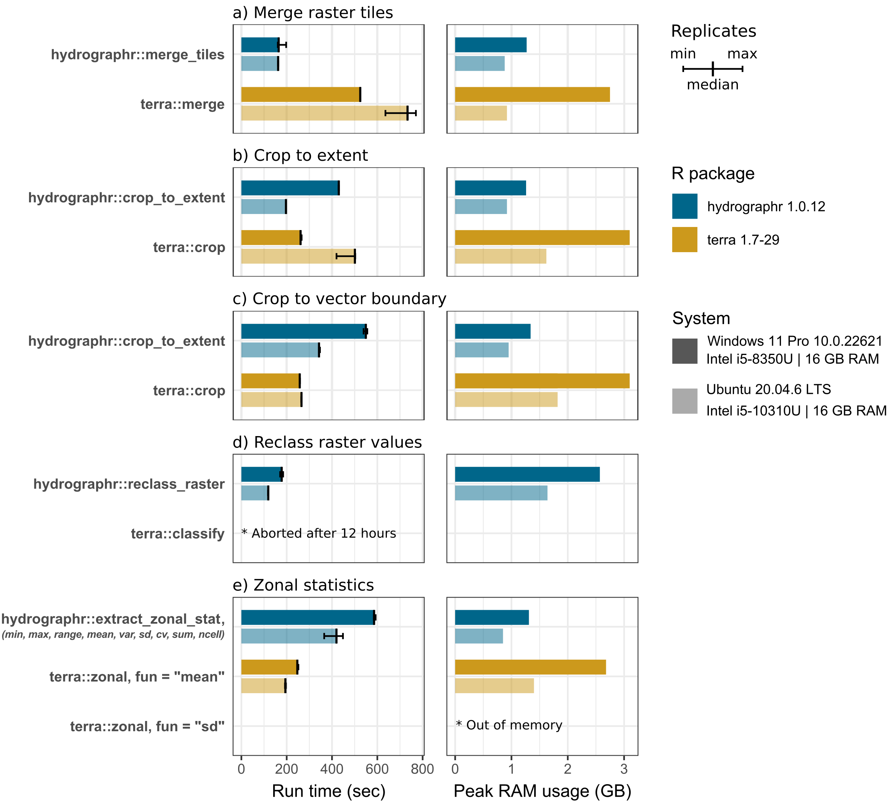

Function benchmarks
Performance of selected
hydrographr functions and their comparison to corresponding
terra workflows
2025-06-18
Source:vignettes/benchmark.Rmd
benchmark.RmdIntroduction and scope
The main focus of hydrographr is to process
Hydrography90m (Amatulli et al. 2022)
data and include them in workflows in R. Nevertheless,
hydrographr provides geospatial functions which can be
useful when working with geospatial data in general, with the goal to be
computationally and RAM usage efficient. Benchmark tests for selected
hydrographr functions should demonstrate the capabilities
of the R package. We compared the tested functions to
corresponding workflows which employ the terra package to
put the performance into perspective without claiming any superiority of
either one of the R packages over the other.
We focused on five common geospatial tasks that can be easily
implemented with both hydrographr and
terra:
- Merging multiple raster layers to one file.
- Cropping a raster layer to a bounding box extent.
- Cropping a raster layer to an irregular boundary of a vector polygon.
- Reclassifying the values of a raster layer.
- Zonal statistics of a raster layer.
All benchmark experiment tasks consisted of reading the input data,
processing the data, and writing the results back to disk (if the output
is a raster layer). For each experiment we recorded the total run-time
of the entire task using the function
microbenchmark::microbenchmark. The peak RAM usage was
estimated by observing the task manager (in Windows) and top (on Linux).
To ensure reliable estimates of the total run-time, we repeated each
experiment three times. hydrographr requires a different
implementations on Windows and Linux systems. Therefore we performed the
experiments on two systems, a Windows laptop computer (Windows 11 Pro
10.0.22621/Intel i5-8350U/16 GB RAM) and a Laptop running Ubuntu Linux
(Ubuntu 20.04.6 LTS/Intel i5-10310U/16 GB RAM) to identify any major
performance differences between operating systems. The following chapter
summarizes the results of the benchmark experiments which where
performed on the two different systems. After the results summary we
documented the code for the individual geospatial tasks for
reproducability. We implemented all hydrographr and
terra functions with default settings and we acknowledge
that specific input arguments may improve the performance. Nevertheless
the benchmark experiments provide a first general performance
overview.
Results of benchmark experiments
The benchmark shows that hydrographr::merge_tiles
overall merged the six tiles faster and using less RAM compared to
terra where the tiles are loaded in R merged with
terra::merge and written to the hard drive. On average, the
performance of hydrographr::merge_tiles surpassed that of
terra on both Windows and Ubuntu, completing the task 2.5
times faster (179 compared to 457 seconds) and 4 times faster (158
compared to 623 seconds), respectively. Additionally, terra
required on Windows five times the amount of RAM to perform the merge
operation compared to hydrographr (0.84 compared to 4.24
GB).
For both tasks, cropping a raster to the extent of a bounding box and
to the boundary of a vector polygon, terra::crop
outperforms hydrographr::crop_to_extent in the experiments
on the Windows system, performing the tasks 3.5 times (130 compared to
454 seconds) and 2.5 times (225 compared to 571 seconds) faster. The
differences on the Ubuntu system were less significant. Particularly, on
the Windows system, terra used 4.5 times (4.43 compared to
0.97 GB) and 3.4 times (3.53 compared to 1.05 GB) more RAM to perform
the cropping task.
The reclassification task was performed for the sub-catchments of the
entire Amazon basin, reassigning random integer values to the over 31
million sub-catchment IDs, thus requiring a rather large
reclassification table. While hydrographr::reclass_raster
was able to perform the task in 179 (Windows) and 116 seconds (Ubuntu),
respectively, while we aborted the terra::classify after 12
hours of run-time with a progress of approximately 10%.
To assess the performance of computing zonal statistics using
hydrographr::extract_zonal_stat, we implemented
terra::zonal to calculate the mean and the standard
deviation of a flow accumulation raster layer, where the ca. 31 million
sub-catchments of the Amazon basin were used as the zones.
hydrographr::extract_zonal_stat returns the following nine
statistical measures by default in a single run: the number of cells
within each zone, minimum and maximum cell values, range, arithmetic
mean, population variance, standard deviation, coefficient of variation,
and sum (as provided by the underlying r.univar function in GRASS GIS).
Hence, if several statistical measures are of interest, the run-times of
individual terra::zonal executions must be added up for
comparison. The calculation of the means is 2.6 times faster when
performed with terra::zonal on Windows 247 compared to 645
seconds) and Ubuntu (197 compared to 520 seconds). The RAM usage is
fairly large when calculating all zonal statistics with
hydrographr, with 9.38 GB on Windows and 6.96 GB on Linux,
while the mean calculation with terra only used 2.68 and
5.39 GB, respectively. While the standard deviation is included in the
hydrographr output table, terra::zonal could
not complete the task of calculating the standard deviation and ran out
of memory.

Benchmark experiments
R packages and paths
Load required libraries:
Function definitions:
# Small helper function to print benchmark experiments
print_experiment <- function(micro) {
cat("Run times in seconds:\n")
t <- round(sort(micro$time*1e-9), digits = 1)
names(t) <- c("min", "median", "max")
t
}Define working directory:
# Define the working directory for the benchmark experiments
wdir <- "my/working/directory/benchmark"
data_dir <- paste0(wdir, "/data")
out_dir <- paste0(wdir, "/output")
# Create a new folder in the working directory to store all the data
dir.create(data_dir)
dir.create(out_dir)Loading and preparing Hydrography90m test data
We selected the Amazon river basin as a test case, which covers six
Hydrography90m tiles in total. The required tile ids which we have to
download are defined with tile_id. The calculation of zonal
statistics we want to perform for the flow accumulation. So we also
download the respective layer tiles from Hydrography90m (defined with
vars_tif). We will also load the Amazon
"basin" boundary vector layer and will use it in a cropping
task. To download the Hydrography90m data we can use the
hydrographr function download_tiles as shown
below.
# Define tile IDs
tile_id <- c("h10v06","h10v08", "h10v10", "h12v06", "h12v08", "h12v10")
# Variables in raster format
vars_tif <- c("sub_catchment", "accumulation")
# Variables in vector format
vars_gpkg <- "basin"
# Download the .tif tiles of the desired variables
download_tiles(variable = vars_tif, tile_id = tile_id, file_format = "tif",
download_dir = data_dir)
# Download the .gpkg tiles of the desired variables
download_tiles(variable = vars_gpkg, tile_id = tile_id, file_format = "gpkg",
download_dir = paste0(wdir, "/data"))We also define the extent of the bounding box of the Amazon basin. The bounding box will be used in a benchmark test for cropping, but also for the preparation of the flow accumulation layer.
bbox <- c(-79.6175000, -20.4991667, -50.3400000, 5.2808333)For the use in the zonal statistics calculation we merge the
downloaded flow accumulation tiles with the hydrographr
function merge_tilesand crop the merged layer to the
defined bounding box with crop_to_extent.
# Path where the flow accumulation tiles where loaded to.
acc_dir <- paste0(data_dir, "/r.watershed/accumulation_tiles20d/")
# List all flow accumulation tiles in the folder.
acc_tifs <- list.files(acc_dir)
# Merge the tiles to one flow accumulation layer.
merge_tiles(tile_dir = acc_dir,
tile_names = acc_tifs,
out_dir = acc_dir,
file_name = "acc_merge.tif")
crop_to_extent(raster_layer = paste0(acc_dir, "acc_merge.tif"),
bounding_box = bbox,
out_dir = acc_dir,
file_name = "acc_merge_crop.tif")Experiment 1: Merging tiles
The first benchmark experiment is to merge the 6 tiles which cover the Amazon basin to on “.tif” file. The run time of the entire workflow is evaluated, which includes loading and merging the input tiles and writing the outputs back to the hard drive.
The tile files (tile_tifs) were loaded into the data
folder which we will now define as tile_dir.
# Folder where the sub-catchment tiles were downloaded to.
tile_dir <- paste0(data_dir, "/r.watershed/sub_catchment_tiles20d")
# List all tile names in tile_dir
tile_tifs <- list.files(tile_dir, pattern = ".tif$")Merging tiles with hydrographr is performed with the
function merge_tiles. The output layer is saved into
out_dir. The default compression level
(compression) is "low", which results already
in relatively small output files while not compromising run time too
much.
# Run the benchmark test 3 times and save the run times in t_merge_hydr
t_merge_hydr <- microbenchmark({
merge_tiles(tile_dir = tile_dir,
tile_names = tile_tifs,
out_dir = out_dir,
file_name = "merge_hydr.tif",
compression = "low")
}, times = 3)
# Print the run times
print_experiment(t_merge_hydr)## Run times in seconds:
## min median max
## 160.5 179.4 190.3The tested terra workflow involves reading the 6
sub-catchment tiles with the function rast, merging them
with merge and writing the result layer with
writeRaster.
# Run the benchmark test 3 times and save the run times in t_merge_terra
t_merge_terra <- microbenchmark({
r1 <- rast(paste0(tile_dir, "/", tile_tifs[1]))
r2 <- rast(paste0(tile_dir, "/", tile_tifs[2]))
r3 <- rast(paste0(tile_dir, "/", tile_tifs[3]))
r4 <- rast(paste0(tile_dir, "/", tile_tifs[4]))
r5 <- rast(paste0(tile_dir, "/", tile_tifs[5]))
r6 <- rast(paste0(tile_dir, "/", tile_tifs[6]))
r_merge <- merge(r1, r2, r3, r4, r5, r6)
writeRaster(r_merge, paste0(out_dir, "/merge_terra.tif"), overwrite = TRUE)
}, times = 3)
# Print the run times
print_experiment(t_merge_terra)## Run times in seconds:
## min median max
## 454.9 457.4 457.4Experiment 2: Cropping to bounding box
In the following experiment the merged layer “merge_hydr.tif” is
cropped to the defined bounding box of the Amazon basin. Cropping with
hydrographr is performed with the function
crop_to_extent.
# Run the benchmark test 3 times and save the run times in t_crop_bbox_hydr
t_crop_bbox_hydr <- microbenchmark({
crop_to_extent(raster_layer = paste0(out_dir, '/merge_hydr.tif'),
bounding_box = bbox,
out_dir = out_dir,
file_name = 'crop_bbox_hydr.tif')
}, times = 3)
# Print the run times
print_experiment(t_crop_bbox_hydr)## Run times in seconds:
## min median max
## 449.8 453.7 478.4The corresponding terra workflow includes loading the
merged layer with rast, cropping the layer to the defined
bounding box with crop and writing the cropped layer to the
hard drive with writeRaster.
# Convert the numeric extent vector to an extent
bboxe <- ext(bbox)
# Run the benchmark test 3 times and save the run times in t_crop_bbox_terra
t_crop_bbox_terra <- microbenchmark({
r <- rast(paste0(out_dir, '/merge_hydr.tif'))
r_crop <- crop(r, bboxe)
writeRaster(r_crop, paste0(out_dir, '/crop_bbox_terra.tif'), overwrite = TRUE)
}, times = 3)
# Print the run times
print_experiment(t_crop_bbox_terra)## Run times in seconds:
## min median max
## 130.1 130.6 143.6Experiment 3: Cropping to basin boundary
Experiment 3 is generally the same as experiment 2, but instead of a bounding box the merged layer was cropped and masked with the basin boundary of the Amazon basin. The basin boundary layer shold be located in the data folder.
basin_gpkg <- paste0(data_dir, "/basin_514761/basin_514761.gpkg")Cropping with hydrographr is again performed with the
function crop_to_extent. Instead of the
bounding_box the path to the ‘gpkg’ input file of the basin
boundary is passed to the function with vector_layer.
# Run the benchmark test 3 times and save the run times in t_crop_vect_hydr
t_crop_vect_hydr <- microbenchmark({
crop_to_extent(raster_layer = paste0(out_dir, '/merge_hydr.tif'),
vector_layer = basin_gpkg,
out_dir = out_dir,
file_name = 'crop_vect_hydr.tif')
}, times = 3)
# Print the run times
print_experiment(t_crop_vect_hydr)## Run times in seconds:
## min median max
## 568.0 571.0 592.3The corresponding terra workflow includes loading the
merged layer with rast, loading the basin boundary with
vect, cropping the layer to the basin boundary with
crop and writing the cropped layer to the hard drive with
writeRaster. For crop the input argument
mask = TRUE is set, to crop and mask the layer with the
basin boundary polygon.
# Run the benchmark test 3 times and save the run times in t_crop_vect_terra
t_crop_vect_terra <- microbenchmark({
r <- rast(paste0(out_dir, '/merge_terra_linux.tif'))
basin <- vect(basin_gpkg)
r_crop <- crop(r, basin, mask = TRUE)
writeRaster(r_crop, paste0(out_dir, '/crop_vect_terra.tif'), overwrite = TRUE)
}, times = 3)
# Print the run times
print_experiment(t_crop_vect_terra)## Run times in seconds:
## min median max
## 224.3 225.0 225.5Experiment 4: Reclassifying raster values
For the reclassification task all sub-catchment IDs of the Amazon
basin should be reassigned a new random value. To set up the experiment,
a table is generated which includes all unique sub-catchment IDs
(recl_hydr$id) and a corresponding “new” random integer
number between 1 and 100 (recl_hydr$new). The Amazon basin
has approximately 31 million sub-catchments which should be
reclassified.
r <- rast(paste0(out_dir, '/crop_vect_hydr.tif'))
ids <- terra::unique(r)
recl_hydr <- data.frame(id = ids$crop_vect_hydr_low_linux,
new = round(runif(nrow(ids), 1, 100)))
recl_hydr$id <- as.integer(recl_hydr$id)
recl_hydr$new <- as.integer(recl_hydr$new)The reclassification with hydrographr was performed with
the function reclass_raster. For the reclassification of
the sub-catchment IDs the generated dummy input table
recl_hydr was passed to the function with data
and the cropped and masked sub-catchment layer was used for the reclass
task.
# Run the benchmark test 3 times and save the run times in t_recl_hydr
t_recl_hydr <- microbenchmark({
reclass_raster(data = recl_hydr, rast_val = "id", new_val = "new",
raster_layer = paste0(out_dir, '/crop_vect_hydr.tif'),
recl_layer = paste0(out_dir, '/recl_hydr.tif'),
read = FALSE, no_data = 0, type = "Int32")
}, times = 3)
# Print the run times
print_experiment(t_recl_hydr)## Run times in seconds:
## min median max
## 162.4 179.5 188.0The corresponding terra workflow includes loading the
cropped sub-catchment layer with rast, the reclassification
with classify and writing the cropped layer to the hard
drive with writeRaster. classify requires a
matrix which defines the from/to values. The reclass workflow with
terra was aborted after 12 hours and a progress of
approximately 10% and cannot be compared to the performance of
hydrographr.
Experiment 5: Zonal statistics
Zonal statistics were calculated based on the cropped and masked
sub-catchment layer to define the zones and the flow accumulation of the
Amazon basin for which zonal statistics were calculated.
hydrographr calculates zonal statistics with the function
extract_zonal_stat. In its current version it cannot select
specific statistical metrics which should be calculated, but returns a
table of statistics including the minimum and maximum values, the range,
the arithmetic mean, variance and standard deviation, the coefficient of
variation, and the number of cells per zone. Therefore, the run time to
calculate all of these metrics is compared to the calculation of the
arithmetic mean and the standard deviation with terra.
# Run the benchmark test 3 times and save the run times in t_zonal_hydr
t_zonal_hydr <- microbenchmark({
extract_zonal_stat(data_dir= acc_dir,
subc_id = "all",
subc_layer = paste0(out_dir, '/crop_vect_hydr.tif'),
var_layer = "acc_merge_crop.tif",
out_dir = out_dir,
file_name = "zonal_hydr.csv",
n_cores =1)
}, times = 3)
# Print the run times
print_experiment(t_zonal_hydr)## Run times in seconds:
## min median max
## 631.6 644.7 657.0In a first test workflow with terra the mean value of
flow accumulation for the sub-catchments is calculated. The
corresponding terra workflow includes loading the cropped
and masked sub-catchment layer with rast, loading the
cropped flow accumulation layer, calculating the mean value for all
sub-catchments with zonal and the input argument
fun = "mean" and writing the cropped layer to the hard
drive with writeRaster.
# Run the benchmark test 3 times and save the run times in t_zonal_terra_mean
t_zonal_terra_mean <- microbenchmark({
z <- rast(paste0(out_dir, '/crop_vect_hydr.tif'))
acc <- rast(paste0(acc_dir, "/acc_merge_crop.tif"))
zonal_terra_mean <- zonal(acc, z, fun = "mean")
}, times = 3)
# Print the run times
print_experiment(t_zonal_terra_mean)## Run times in seconds:
## min median max
## 246.6 247.0 251.7In a second experiment with terra the standard deviation
should be calculated. The workflow remains the same. The only difference
is the input argument fun in zonal which is
now set as fun = "sd". The execution of this experiment
resulted in a memory overflow and could not be completed.